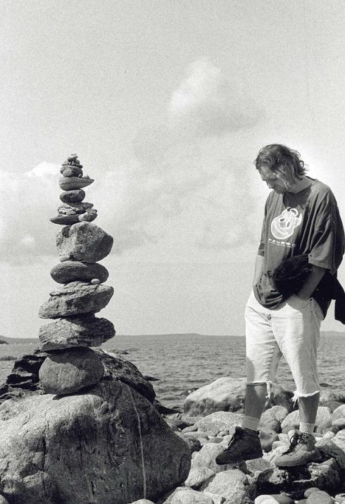

Index | About | Source | News | Credits | Handbook | Implementation
Contribution
The following people have contributed to delphinusdnsd:
Active Programmer(s)
Peter J. Philipp (petphi [at] delphinusdns [dot] org)I created delphinusdnsd. Developing DNS software was always something that interested me since 2002 where I wrote the first header files which I reused in this implementation. The photo of me here, stems from that time. I have experience with DNS as an admin since 1997, and as a user since 1994.
Emeritus (contributions before January 1st, 2016)
Michael J. Brune [FreeBSD Port]Mecca @ efnet IRC [Mac OS X Port]